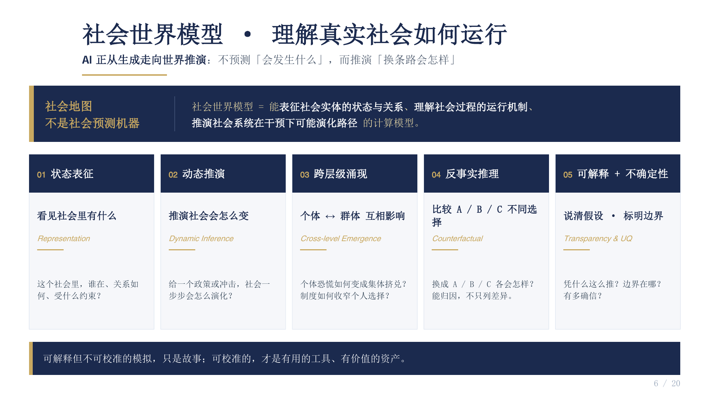

Representation
What actors, relationships, and constraints exist?
研究社会世界模型的基础理论、数据方法与系统实现，使人工智能能够表达社会状态、理解互动机制，并对复杂社会过程进行可校准的反事实推演。 We study the theory, data, and systems behind social world models, enabling AI to represent social states, understand interactions, and run calibrated counterfactual simulations.
核心问题 Core problem
社会系统同时包含异质主体、认知偏差、关系网络、制度约束和跨尺度涌现。模型不仅要“生成像真的结果”，还要能够说明结果为何发生、在什么边界下成立，以及干预后可能发生什么。 Social systems combine heterogeneous actors, cognition, networks, institutions, and multi-scale emergence. A useful model must explain why an outcome occurs, where it remains valid, and what may happen under intervention.

Social world model
AI moves from predicting what may happen to reasoning about how outcomes change under alternative paths.
What actors, relationships, and constraints exist?
How does society evolve after a policy or shock?
How do individual choices become collective outcomes?
How would outcomes differ under paths A, B, or C?
Which assumptions matter, and where are the boundaries?
四条研究主线 Four research tracks
每条主线既对应基础科学问题，也对应可建设的数据集、评测基准和实验系统。 Each track connects fundamental questions with datasets, benchmarks, and experimental systems that can be built and tested.
研究社会状态的多模态表征、社会动力学学习、跨层级因果机制、反事实模拟、不确定性量化及现实数据校准。 Multimodal social state representations, learned social dynamics, cross-level causal mechanisms, counterfactual simulation, uncertainty, and real-world calibration.
研究具有记忆、认知、关系和制度约束的智能体，关注大规模交互中的行为适应、协作冲突与群体涌现。 Agents with memory, cognition, relations, and institutional constraints, with emphasis on adaptation, coordination, conflict, and emergence at scale.
构建社会行为轨迹、交互链、机制标注与合成数据方法，研究数据质量、数据治理、反馈学习以及模型校准和评测。 Social trajectories, interaction chains, mechanism labels, synthetic data, quality and governance, feedback learning, calibration, and evaluation.
面向公共政策、舆情传播、组织决策、产业协同和数据基础制度，建立可审计的计算实验和政策沙盒。 Auditable computational experiments and policy sandboxes for public policy, information diffusion, organizations, industrial coordination, and data institutions.
开放问题 Open questions
这些问题既需要算法和系统，也需要对社会机制、因果识别与研究伦理的理解。 These questions require algorithms and systems, together with an understanding of social mechanisms, causal identification, and research ethics.
研究原则 Research principles
我们希望每项工作都能清楚说明假设、证据、适用范围和不确定性。 Every project should make its assumptions, evidence, scope, and uncertainty explicit.
能够追踪结果由哪些主体、关系和规则产生。 Trace outcomes to agents, relations, and rules.
用现实观测持续约束模型与参数。 Constrain models and parameters with observation.
保留数据版本、实验配置和评估记录。 Preserve data versions, configurations, and evaluations.
明确模型能力、伦理边界和失败条件。 State capabilities, ethical boundaries, and failure conditions.
查看课题组计划建设的模拟系统、社会数据与评测基础设施。 Explore the simulation systems, social data, and evaluation infrastructure under development.